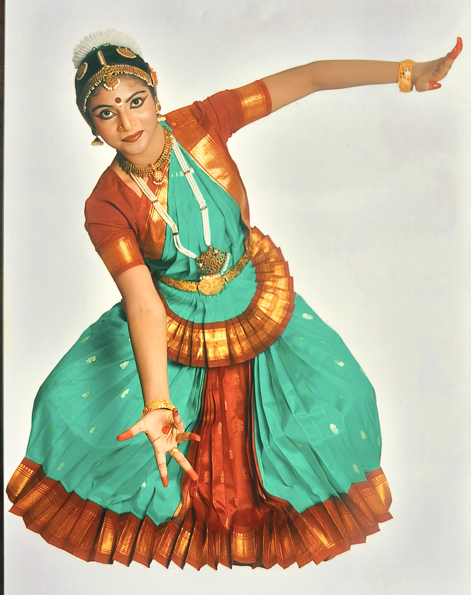

Performance Arts
Stage performances, site-specific works, and collaborative creations.
Hi! I am Shrija. I am a researcher, educator and artist, with a specialisation in spatio-cultural studies and performance arts. I like to learn about ecology and landscapes and how cultural systems are built around them and societies are shaped. In brief, I study, Human-Nature-Culture interface. My focus is on conservation and awareness and bridging the gap between society and ecology through art. To pursue my interests, I did my PhD in Humanities and Social Sciences after completing my Bachelors and Master’s degree in Literature and Culture Studies.
Stage performances, site-specific works, and collaborative creations.
Talks and participatory workshops for institutions, festivals, and communities.
Advisory on arts research, documentation, and methodologies.

Voice acting, storytelling, and experimental vocal performances.
A brief abstract or teaser for the article goes here.
Short description of the article or blog entry.